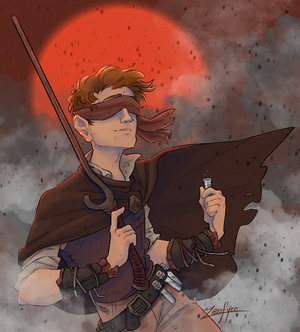

| Parents | Jedal, Margel |
|---|---|
| Relatives | Cladent |
| Descendants | Several post-Catacendre noble houses |
| Born | 1007 |
| Abilities | Tineye (Savant, formerly), Mistborn, Hemalurgist |
| Titles | Survivor of the Flames, Lord Mistborn |
| Aliases | Jedal, Lestibournes |
| Groups | Preservers, Venture army, Originators, Ghostbloods[3] |
| Birthplace | Eastern Dominance |
| Residence | Luthadel (formerly), Elendel |
| Ethnicity | Skaa |
| Homeworld | Scadrial |
| Universe | Cosmere |
| Introduced In | Mistborn: The Final Empire |

information from The Coppermind